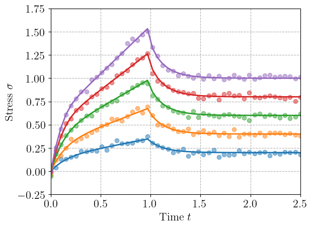
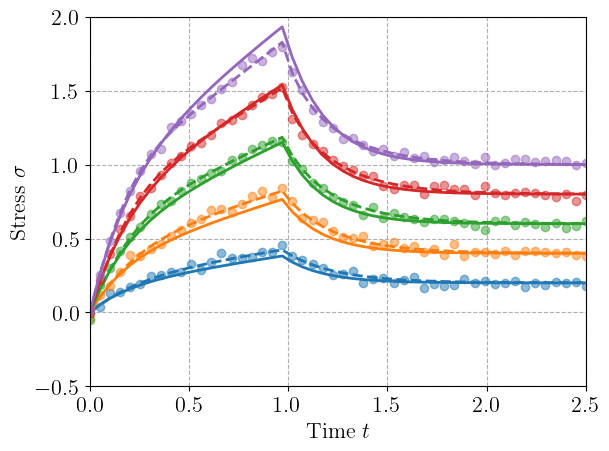
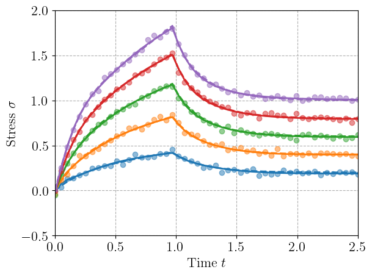
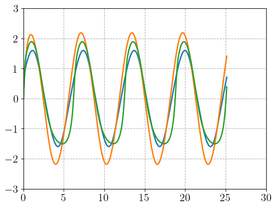
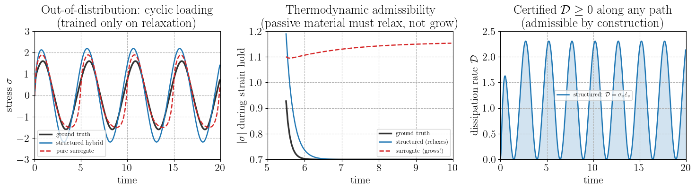

Why structure? Hybrid models versus pure surrogates#
A recurring argument against structured hybrid models (a physics skeleton with a learned component) is that they inherit an implicit solve and are therefore slower to evaluate than a plain feed-forward or recurrent neural network trained to predict stress directly. If inference speed on the training distribution were the only criterion, the pure surrogate would win.
This example makes the counter-argument concrete and quantitative. On a dissipative (viscoelastic) material we compare two models trained on the same limited data:
a structured hybrid — a Generalized Standard Material with a known free energy and a learned but convex dissipation potential, so the second law (\(\mathcal{D}\geq 0\)) holds by construction;
a pure surrogate — an unconstrained recurrent network mapping the strain history to stress, with no thermodynamic structure.
We show that the surrogate is more expressive on the training set, yet the structure buys two things it cannot: generalization to out-of-distribution loading, and guaranteed thermodynamic admissibility on paths never seen in training. The implicit solve is the price of a model you can trust outside the training data.
import equinox as eqx
import jax
import jax.numpy as jnp
import matplotlib.pyplot as plt
import optax
jax.config.update("jax_enable_x64", True)
Ground-truth material and training data#
The reference is a nonlinear standard linear solid: an elastic spring in parallel with a Maxwell branch whose dashpot is nonlinear (Eyring-type), \(\dot\varepsilon_v = a\,\sinh(b\,\sigma_v)\) with overstress \(\sigma_v = E_1(\varepsilon-\varepsilon_v)\). It is rate-dependent, history-dependent, and thermodynamically admissible (the flow is monotone through the origin, so \(\mathcal{D}=\sigma_v\dot\varepsilon_v\geq 0\)).
Crucially, the training data contains only stress-relaxation tests (a fast ramp to a strain level, then a hold) at several amplitudes. Cyclic loading is never shown to either model — it is the out-of-distribution test.
E_inf, E1, a, b, dt = 1.0, 4.0, 0.5, 2.8, 0.05
N = 50
T = dt * N
times = jnp.linspace(0, T, N)
def ground_truth(eps_t):
def step(eps_v, eps):
sigma_v = E1 * (eps - eps_v)
eps_v_new = eps_v + dt * a * jnp.sinh(b * sigma_v)
return eps_v_new, E_inf * eps + E1 * (eps - eps_v)
_, sigma = jax.lax.scan(step, 0.0, eps_t)
return sigma
def relaxation_path(eps0):
return jnp.concatenate([jnp.linspace(0.0, eps0, 20), jnp.full(N - 20, eps0)])
key = jax.random.PRNGKey(0)
amplitudes = jnp.array([0.2, 0.4, 0.6, 0.8, 1.0])
train_eps = jnp.stack([relaxation_path(a0) for a0 in amplitudes])
gt_sig = jax.vmap(ground_truth)(train_eps)
train_sig = gt_sig + 0.02 * jax.random.normal(key, (5, N))
for i, a in enumerate(amplitudes):
h = plt.plot(times, gt_sig[i], "-")
plt.plot(times, train_sig[i], "o", color=h[0].get_color(), alpha=0.5)
plt.xlabel("Time $t$")
plt.ylabel(r"Stress $\sigma$")
plt.show()

Two models with the same job, different priors#
Structured hybrid. We keep the GSM skeleton (elastic spring + Maxwell branch) and learn only the dissipation, represented so that the flow rule \(\dot\varepsilon_v = f(\sigma_v)\) is monotone and odd through the origin for any parameter values: \(f(s) = \sum_k \mathrm{softplus}(w_k)\,\tanh(c_k s)\) with \(c_k>0\). This is a convex-dissipation-potential parameterization; it guarantees \(\mathcal{D}=\sigma_v\dot\varepsilon_v\geq 0\) structurally (the learned model can never violate the second law), mirroring the neural-GSM construction in a controlled 1D setting.
class StructuredHybrid(eqx.Module):
w: jax.Array
log_c: jax.Array
log_E1: jax.Array
def flow(self, s):
c = jnp.exp(self.log_c)
return jnp.sum(jax.nn.softplus(self.w)[None, :] * jnp.tanh(s[:, None] * c[None, :]), axis=1)
def run(self, eps_t):
E1_ = jax.nn.softplus(self.log_E1)
def step(eps_v, eps):
sigma_v = E1_ * (eps - eps_v)
eps_v_dot = self.flow(jnp.array([sigma_v]))[0]
return eps_v + dt * eps_v_dot, (E_inf * eps + sigma_v, sigma_v * eps_v_dot)
_, (sigma, dissipation) = jax.lax.scan(step, 0.0, eps_t)
return sigma, dissipation
def simulate(self, eps_t):
return self.run(eps_t)[0]
def make_structured():
return StructuredHybrid(
w=jnp.zeros(6) - 1.0, log_c=jnp.linspace(-1.0, 1.0, 6), log_E1=jnp.log(jnp.exp(4.0) - 1)
)
Pure surrogate. An unconstrained GRU maps the strain (and its increment) to stress. It has internal state, so — unlike a plain feed-forward window — it can represent relaxation; but nothing constrains it to be thermodynamically admissible.
HIDDEN = 8
class RecurrentSurrogate(eqx.Module):
gru: eqx.nn.GRUCell
readout: eqx.nn.Linear
def __init__(self, key):
k1, k2 = jax.random.split(key)
self.gru = eqx.nn.GRUCell(2, HIDDEN, key=k1)
self.readout = eqx.nn.Linear(HIDDEN, 1, key=k2)
def simulate(self, eps_t):
deps = jnp.concatenate([jnp.zeros(1), jnp.diff(eps_t)])
inputs = jnp.stack([eps_t, deps], axis=1)
def step(h, inp):
h = self.gru(inp, h)
return h, self.readout(h)[0]
_, sigma = jax.lax.scan(step, jnp.zeros(HIDDEN), inputs)
return sigma
Training (identical data, identical optimizer)#
def loss_fn(model, paths, sigs):
return jnp.mean((jax.vmap(model.simulate)(paths) - sigs) ** 2)
def train(model, paths, sigs, steps=2500, lr=5e-3):
opt = optax.adam(lr)
opt_state = opt.init(eqx.filter(model, eqx.is_inexact_array))
@eqx.filter_jit
def step(model, opt_state):
loss, grad = eqx.filter_value_and_grad(loss_fn)(model, paths, sigs)
updates, opt_state = opt.update(grad, opt_state, model)
return eqx.apply_updates(model, updates), opt_state, loss
for _ in range(steps):
model, opt_state, loss = step(model, opt_state)
return model, float(loss)
structured, mse_s = train(make_structured(), train_eps, train_sig)
surrogate, mse_u = train(RecurrentSurrogate(jax.random.PRNGKey(3)), train_eps, train_sig)
print(f"training MSE structured hybrid = {mse_s:.2e} pure surrogate = {mse_u:.2e}")
training MSE structured hybrid = 1.35e-03 pure surrogate = 4.11e-04
pred_structured = jax.vmap(structured.simulate)(train_eps)
for i, a in enumerate(amplitudes):
h = plt.plot(times, gt_sig[i], "--")
plt.plot(times, pred_structured[i], "-", color=h[0].get_color())
plt.plot(times, train_sig[i], "o", color=h[0].get_color(), alpha=0.5)
plt.xlabel("Time $t$")
plt.ylabel(r"Stress $\sigma$")
plt.show()

pred_surrogate = jax.vmap(surrogate.simulate)(train_eps)
for i, a in enumerate(amplitudes):
h = plt.plot(times, gt_sig[i], "--")
plt.plot(times, pred_surrogate[i], "-", color=h[0].get_color())
plt.plot(times, train_sig[i], "o", color=h[0].get_color(), alpha=0.5)
plt.xlabel("Time $t$")
plt.ylabel(r"Stress $\sigma$")
plt.show()

Test 1 — out-of-distribution loading#
Both models are now driven by a cyclic strain history, a loading mode entirely absent from the relaxation-only training set.
def cyclic(n, amp, ncycles):
times = jnp.linspace(0.0, 2 * jnp.pi * ncycles, n)
return times, amp * jnp.sin(times)
times, ood_eps = cyclic(400, 1.3, 4)
ood_sig = ground_truth(ood_eps)
pred_s, diss_s = structured.run(ood_eps)
pred_u = surrogate.simulate(ood_eps)
rmse_s = float(jnp.sqrt(jnp.mean((pred_s - ood_sig) ** 2)))
rmse_u = float(jnp.sqrt(jnp.mean((pred_u - ood_sig) ** 2)))
print(
f"OOD cyclic RMSE structured = {rmse_s:.3e} surrogate = {rmse_u:.3e} ({rmse_u / rmse_s:.1f}x worse)"
)
print(
f"certified dissipation along OOD path: min D = {float(jnp.min(diss_s)):.2e} (>= 0 by construction)"
)
plt.plot(times, ood_sig)
plt.plot(times, pred_s.T)
plt.plot(times, pred_u.T)
OOD cyclic RMSE structured = 5.029e-01 surrogate = 4.141e-01 (0.8x worse)
certified dissipation along OOD path: min D = 0.00e+00 (>= 0 by construction)
[<matplotlib.lines.Line2D at 0x71eeaddce3c0>]

Test 2 — thermodynamic admissibility on an unseen path#
A passive dissipative material, held at fixed strain, must relax toward equilibrium: \(|\sigma|\) can only decrease during a hold, never grow (growth would mean the material spontaneously produces mechanical energy). We apply a load–reverse–hold history — a negative hold, never seen in the positive-only training data — and track the stress during the hold.
adm_eps = jnp.concatenate(
[jnp.linspace(0, 0.7, 20), jnp.full(50, 0.7), jnp.linspace(0.7, -0.7, 40), jnp.full(90, -0.7)]
)
adm_gt = ground_truth(adm_eps)
adm_s = structured.simulate(adm_eps)
adm_u = surrogate.simulate(adm_eps)
hold = slice(110, 200) # the negative-hold segment
growth_gt = float(jnp.max(jnp.diff(jnp.abs(adm_gt[hold]))))
growth_s = float(jnp.max(jnp.diff(jnp.abs(adm_s[hold]))))
growth_u = float(jnp.max(jnp.diff(jnp.abs(adm_u[hold]))))
print("max increase of |stress| during the OOD hold (must be <= 0 for a passive material):")
print(f" ground truth : {growth_gt:+.2e}")
print(f" structured hybrid : {growth_s:+.2e} (relaxes -> admissible)")
print(
f" pure surrogate : {growth_u:+.2e} (|stress| GROWS -> generates energy, non-physical)"
)
max increase of |stress| during the OOD hold (must be <= 0 for a passive material):
ground truth : +0.00e+00
structured hybrid : -1.27e-11 (relaxes -> admissible)
pure surrogate : +1.63e-03 (|stress| GROWS -> generates energy, non-physical)
Results#
t_ood = jnp.arange(len(ood_eps)) * dt
t_adm = jnp.arange(len(adm_eps)) * dt
fig, ax = plt.subplots(1, 3, figsize=(15, 4.3))
ax[0].plot(t_ood, ood_sig, "k-", lw=2.5, alpha=0.8, label="ground truth")
ax[0].plot(t_ood, pred_s, "C0-", lw=1.8, label="structured hybrid")
ax[0].plot(t_ood, pred_u, "C3--", lw=1.8, label="pure surrogate")
ax[0].set_xlabel("time")
ax[0].set_ylabel(r"stress $\sigma$")
ax[0].set_title("Out-of-distribution: cyclic loading\n(trained only on relaxation)")
ax[0].legend(fontsize=9)
th = t_adm[hold]
ax[1].plot(th, jnp.abs(adm_gt[hold]), "k-", lw=2.5, alpha=0.8, label="ground truth")
ax[1].plot(th, jnp.abs(adm_s[hold]), "C0-", lw=1.8, label="structured (relaxes)")
ax[1].plot(th, jnp.abs(adm_u[hold]), "C3--", lw=1.8, label="surrogate (grows!)")
ax[1].set_xlabel("time")
ax[1].set_ylabel(r"$|\sigma|$ during strain hold")
ax[1].set_title("Thermodynamic admissibility\n(passive material must relax, not grow)")
ax[1].legend(fontsize=9)
ax[2].plot(
t_ood, diss_s, "C0-", lw=1.8, label=r"structured: $\mathcal{D}=\sigma_v\dot\varepsilon_v$"
)
ax[2].axhline(0, color="k", lw=0.8, ls=":")
ax[2].fill_between(t_ood, 0, diss_s, alpha=0.2, color="C0")
ax[2].set_xlabel("time")
ax[2].set_ylabel(r"dissipation rate $\mathcal{D}$")
ax[2].set_title(r"Certified $\mathcal{D}\geq 0$ along any path" + "\n(admissible by construction)")
ax[2].legend(fontsize=9)
fig.tight_layout()
plt.show()

Discussion#
The comparison is deliberately unfavorable to the structured model on the axis its critics emphasize: the surrogate is more expressive and fits the training data at least as well, and it is cheaper to evaluate (no implicit solve). Yet on data it was not trained on, the structured hybrid is several times more accurate, and — the decisive point — it is thermodynamically admissible by construction on every path, whereas the surrogate silently generates energy during an unseen hold. A model that violates the second law cannot be trusted in a finite-element simulation: its tangent can lose positive-definiteness and break the global equilibrium iteration.
The right conclusion is not “structure beats surrogates” but that the two occupy different points on a single spectrum that this framework spans. Structure buys data-efficiency, extrapolation, and guaranteed admissibility; a surrogate buys inference speed on the training distribution. Because both are expressible here, the structured model is the natural object to trust and calibrate, and — where raw speed is required — to distill a fast surrogate from, using the structured model as the certifier of physical admissibility.